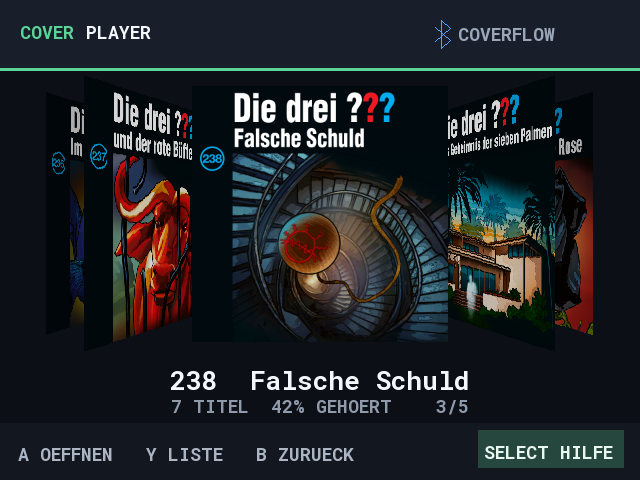
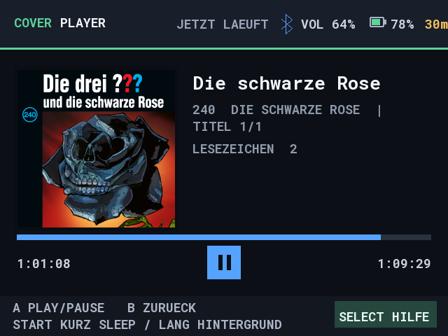
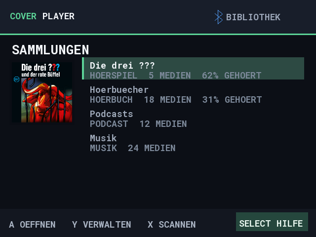

Alben zum Durchblättern.
CoverFlow oder Liste. Musik, Hörbücher und Podcasts in eigenen Ordner-Sammlungen.
OFFLINE. OPEN SOURCE. DEINE SAMMLUNG.
Aus der Spielekonsole wird dein MP3-Player. Blättere durch Alben, hör dein Hörbuch weiter oder lass Musik beim Spielen laufen.
Knulli · muOS · Nintendo Switch ALPHA

MEHR HÖREN. WENIGER SUCHEN.
CoverFlow oder Liste. Musik, Hörbücher und Podcasts in eigenen Ordner-Sammlungen.
Wiedergabepositionen und Lesezeichen. Mit automatischem Titelwechsel und Sleep-Timer.
Hintergrundwiedergabe auf Knulli und muOS. Knulli senkt dabei den Spielton ab.
Mit Steuerkreuz und Buttons durch die Sammlung. Hilfe direkt in der App, auf Deutsch und Englisch.
Albumcover in der Übersicht, eingebettete Titelcover im Player. Beim Stöbern läuft die Musik weiter.
Eigene Dateien statt Streaming. Auf unterstützter Firmware dimmt der Bildschirm beim Hören.
AUF DAS WESENTLICHE KONZENTRIERT
Vom Lieblingsalbum bis zum nächsten Kapitel. Große Cover, klare Listen und die wichtigsten Tasten immer im Blick.
Alle Screenshots ansehen ↗

BEREIT ZUM LOSHÖREN?
Die Downloads liegen bei GitHub. Wähle dort das passende Paket.
Musik im Hintergrund, abgesenkter Spielton und optional eine eigene Hauptmenü-Kategorie.
CoverPlayer-Knulli.zipZu den Downloads ↗Installation & BedienungDeine Bibliothek mit CoverFlow und Hintergrundwiedergabe, als installierbare App.
CoverPlayer.muxappZu den Downloads ↗Installation & BedienungExperimenteller Homebrew-Player mit eigener 16:9-Oberfläche. Benötigt eine homebrewfähige Switch.
CoverPlayer-Switch-…-alpha….zipZur Alpha ↗Installation & TeststatusSwitch: Wiedergabe in einer früheren Alpha bestätigt; aktuelle Alpha, Lite und Docking noch nicht vollständig auf Hardware geprüft. Hintergrundwiedergabe auf Switch ist nicht zugesichert.
IN DREI SCHRITTEN
Die Anleitung deiner Plattform führt dich durch die Installation.
MP3s auf die SD-Karte kopieren. Mit Y in der Sammlungsansicht einen Ordner hinzufügen.
Mit A öffnen. Hilfe gibt’s über Select, auf Switch über −.
OFFEN WEITERENTWICKELT
Fragen, Fehler oder Ideen? Auf GitHub geht’s weiter.